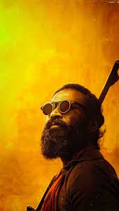

Dhanush
Actor director producer playbacksinger lyricist
.jpg) .jpg)
| .jpg) |  |
Dhanush's first film was Thulluvadho Ilamai, a 2002 coming-of-age film directed by his father, Kasthuri Raja. He achieved further success in Polladhavan (2007) and Yaaradi Nee Mohini (2008), both of which were critically acclaimed and commercially successful.[6] His role as a rooster fight jockey in Aadukalam (2010) won him the National Film Award for Best Actor and the Filmfare Award for Best Actor – Tamil.[7] He continued success with films, including Maryan (2013), Velaiilla Pattadhari (2014), Anegan (2015), Maari (2015), Kodi (2016), Vada Chennai (2018), Asuran (2019), Thiruchitrambalam (2022), Vaathi (2023) and Raayan (2024), the lattermost of which emerged as his highest-grossing release.[8] In 2011, Dhanush's popular bilingual song "Why This Kolaveri Di" from the romantic psychological thriller film 3 (2012) became the first Indian music video to cross 100 million views on YouTube.[9] He made his Hindi film debut with Aanand L. Rai's Raanjhanaa (2013). His performance as an obsessive one-sided lover in the film won him the Filmfare Award for Best Male Debut in addition to a nomination for the Filmfare Award for Best Actor.[10] Dhanush produces films through his production company, Wunderbar Films, and made his directorial debut with Pa Paandi (2017).[11][12] His song "Rowdy Baby" from Maari 2 became one of the most-viewed Indian songs of all time.[citation needed] It is the first South Indian video song to reach 1.5 billion views on YouTube.[citation needed] Dhanush won his second National Film Award for Best Actor for Asuran (2019).[13]